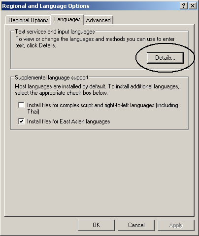
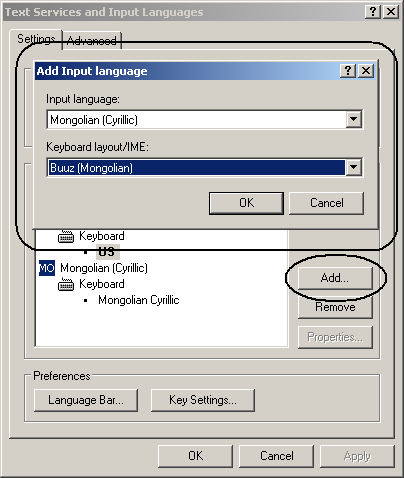

How to configure Windows to use Buuz
- Open the Windows Control Panel
- If the Control Panel is in "Category view", select "Date, Time, Language and Regional Options".
- Open the "Regional and Language Options" icon.
-
Choose the "Languages" tab, and then click on the "Details" button.

-
The Text Services and Input Languages window will appear.
- Click on the Add button
- In the "Input Language" menu, select "Mongolian (Cyrillic)"
- In the "Keyboard layout/IME" menu, select "Buuz (Mongolian)"
- Click the OK button.

-
That's it.